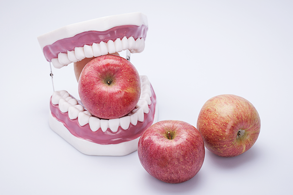

충치를 부르는 식습관
무의식중에 자리 잡은 우리나라만의 식습관이 치아에 악영향을 미칠 수도 있습니다.
뜨거운 국물
국물이 치아의 미세한 곳까지 파고들 수 있습니다. 국물은 육류의 기름기는 치열이 불규칙할수록 치아 표면에 붙는 상태가 되기 쉽습니다. 이미 충치가 신경까지 파고 든 경우에는 뜨거운 국물이 치아에 자극을 주어 시린 증상이 나타나게 됩니다.
단단하고 질긴 음식
선천적으로 저작력(씹는 힘)이 약한 경우, 충치가 있는 경우, 치아의 법랑질이 손상된 경우에는 단단하고 질긴 음식을 깨물어 먹다가 치아에 충격이 가해져 심한 경우 치아가 깨지고 부서지는 치아 파절이 올 수 있습니다.
필수 후식,과일
과일을 먹은 후 구강관리를 소홀히 하면 충치가 생길 수 있습니다. 대표적 후식 과일인 사과에는 당분과 함께 사과산이 들어 있는데 사과에 있는 당분은 이를 썩게 하고 사과산은 치아를 부식시킨다. 사과뿐만 아니라 대부분의 과일에는 당분이 풍부하게 포함되어 있어 고농도의 당분이 치아표면에 남아 충치가 발생되기 쉽다.
애호 식품 커피
커피의 갈색 색소가 미세한 구멍 사이로 들어가 누렇게 변색될 수 있고, 커피에 설탕, 시럽이나 프림이 과하게 들어갈 경우 치주염이나 충치를 유발하거나 악화시킵니다. 특히 젊은이들이 즐겨 마시는 브랜드 커피는 시럽, 생크림, 캐러멜 등 단 성분들이 많이 들어 있어 충치가 발생할 확률이 더 높습니다.